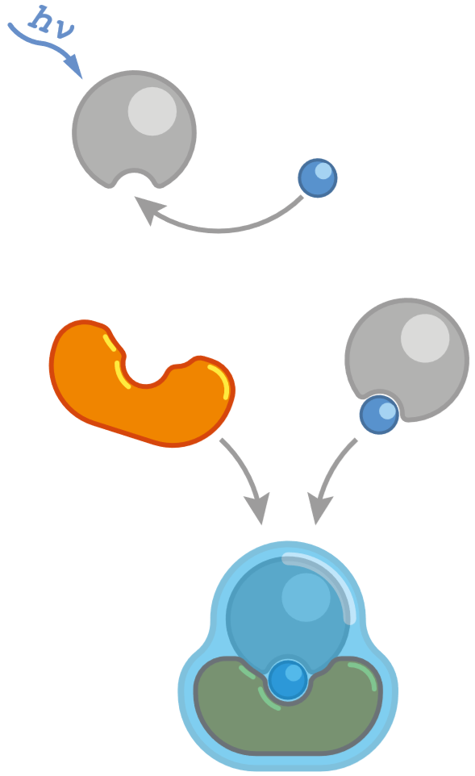

When light  hits an iron ion Fe3+
from ammonium iron(III) citrate, it initiates a reaction in which Fe3+
gains an electron
hits an iron ion Fe3+
from ammonium iron(III) citrate, it initiates a reaction in which Fe3+
gains an electron  , turning
(or, as chemists say, reducing) into Fe2+ .
But the product of this reaction is not yet visible, and that's where
potassium hexacyanoferrate(III)
, turning
(or, as chemists say, reducing) into Fe2+ .
But the product of this reaction is not yet visible, and that's where
potassium hexacyanoferrate(III)  comes into play. It does not stick to Fe3+ , but
once it meets Fe2+ , it forms an insoluble
intensely-colored compound called Prussian blue.
This is what we see when we look at a cyanotype image.
comes into play. It does not stick to Fe3+ , but
once it meets Fe2+ , it forms an insoluble
intensely-colored compound called Prussian blue.
This is what we see when we look at a cyanotype image.
Nowadays, this process is used mostly by hobbyists to print photos or even decorate clothes. But in the second half of the nineteenth and early twentieth centuries, it was used much more widely for copying technical drawings. That's why architectural plans and technical drawings are still often called blueprints.
The cyanotype process is not the only way to obtain Prussian blue. In fact, this stunningly blue compound was known as one of the best blue pigments well before cyanotype was invented. Many works of art owe it their striking shades of blue-Hokusai's "Great Wave", which we have just made a print of, for one.